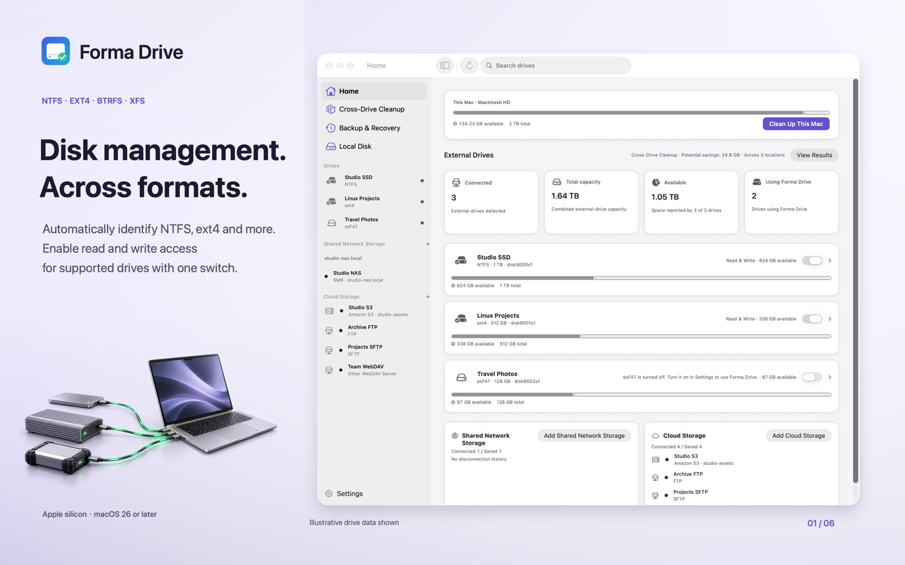
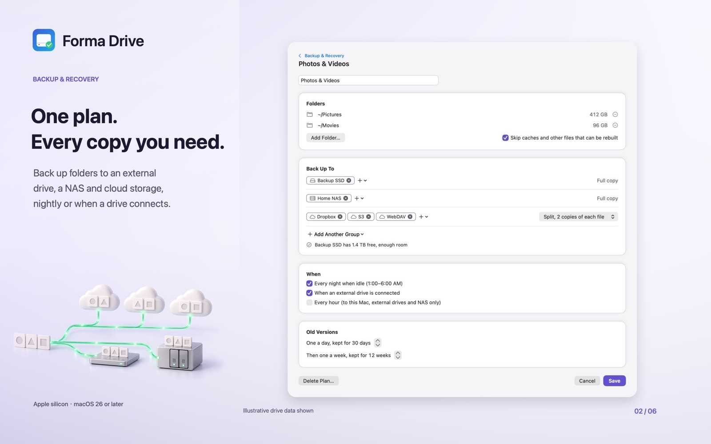
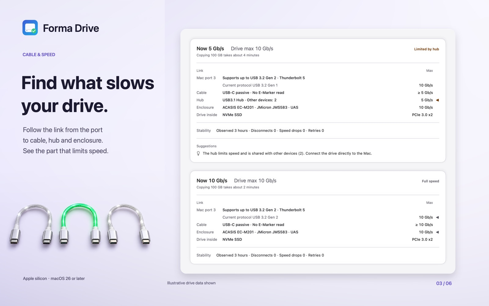
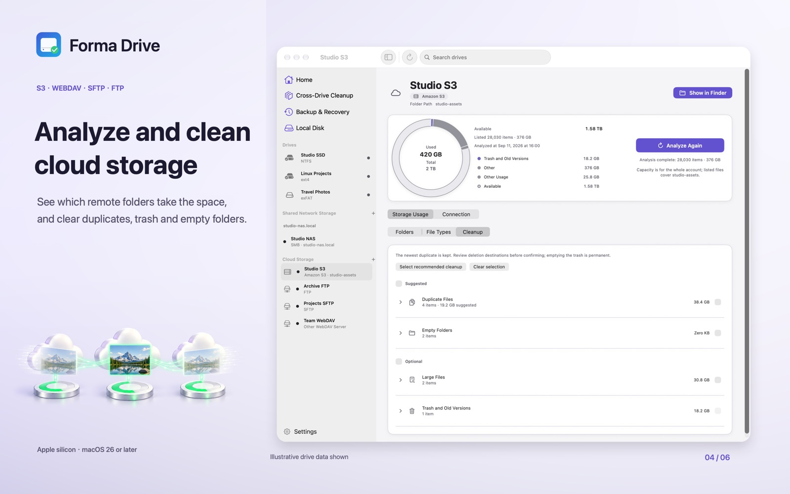
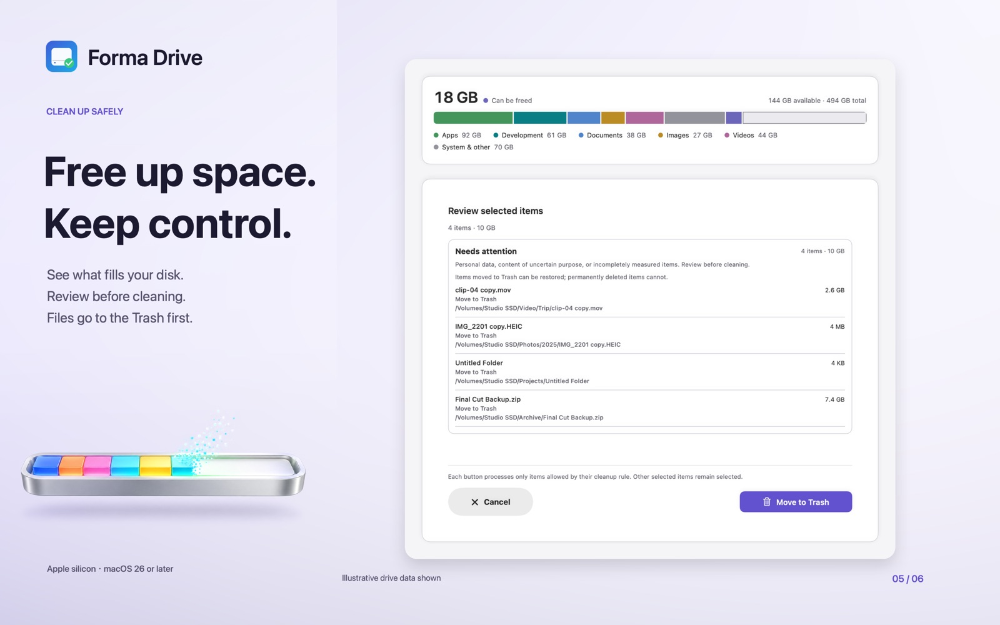
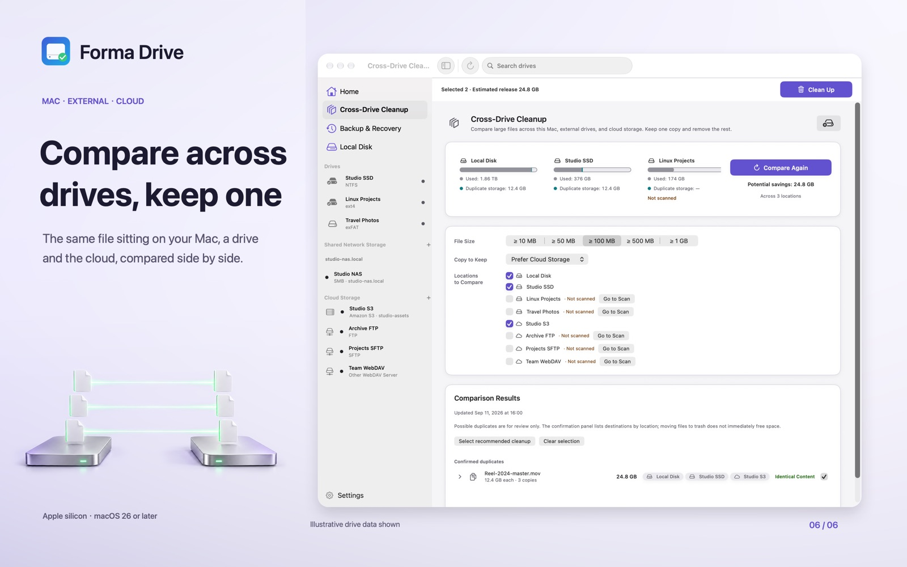

Forma Drive
Use Windows and Linux drives on your Mac like any other drive, and see where your disk space goes.
What you get
- Read and write NTFS, ext4, Btrfs and XFS drives in Finder. exFAT and FAT32 too.
- See which part of the connection (Mac port, cable, enclosure, drive) limits the speed of a slow copy.
- Unlock BitLocker and LUKS encrypted drives with their password.
- Back up folders to an external drive, a NAS or cloud storage, with old versions kept and copies checked.
- See what fills your Mac, external drives and cloud storage, and clean caches and build files. Cleaned items go to the Trash.
- Find duplicate files across drives and cloud storage.
Screenshots






Requirements
Apple silicon Mac, macOS 26 or later. One-time purchase on the Mac App Store, no subscription, no account.